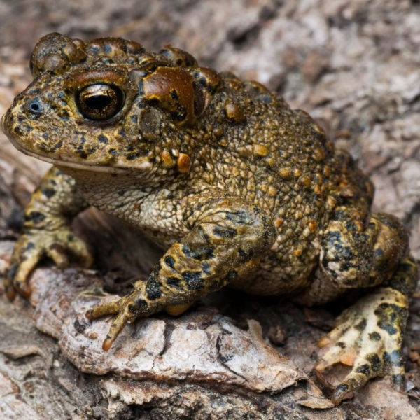
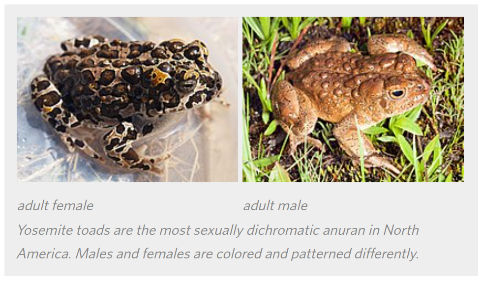

Anaxyrus canorus
- Common name
- Yosemite Toad
- Family
- Bufonidae
- Family common name
- True toads
- Order
- Anura
- Order common name
- Frogs and Toads
- Habitat and Range
- Endemic to the Sierra Nevada of California, the species ranges from the Alpine County to Fresno County. Yosemite toads are only found in the montane to subalpine elevational zone of 6,500–11,000 ft.
The species primarily uses montane and subalpine wet meadows for breeding, but will occasionally breed in ephemeral ponds, lake margins, or other riparian areas. Flatter, southwesterly meadows, with more precipitation, containing warmer waters seem to be favored by the species. More specifically, breeding takes place in shallow snowmelt ponds or flooded areas, and eggs are usually deposited in water less than 5 cm deep.
They probably overwinter nearby in stream channels and associated vegetation (willows, sedges, and grasses). Many juveniles (1+ years in age) probably disperse farther upland into adult foraging habitat, especially by mid-summer of their second year, but they can also be found nearby breeding ponds. Adult upland foraging habitat tends to be covered in seeps and springs, willows, tall forbs, granitic boulders, or (at lower elevation) forest clearings.
